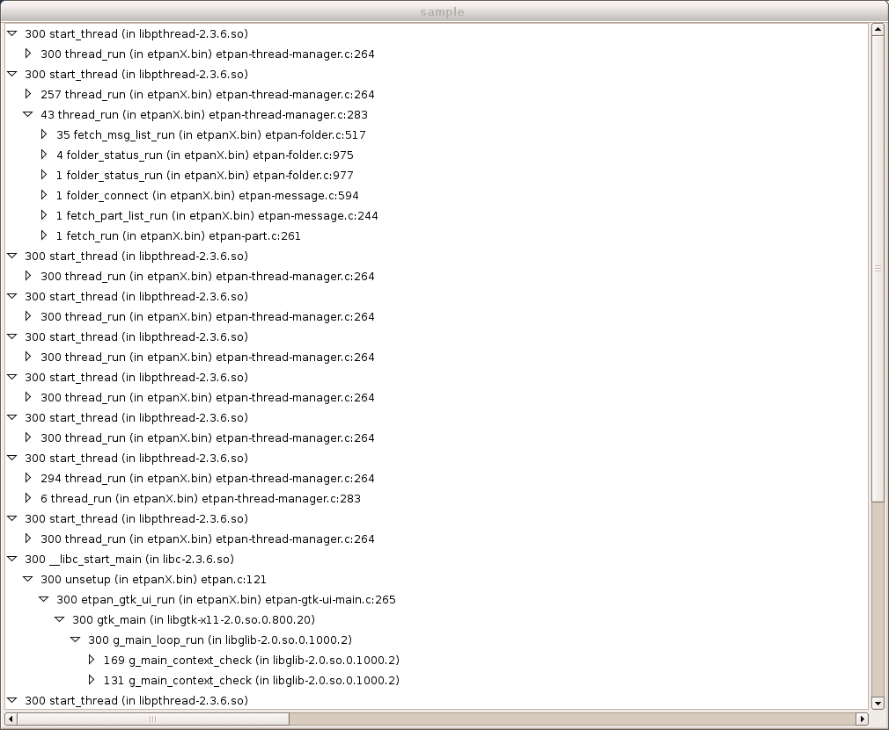
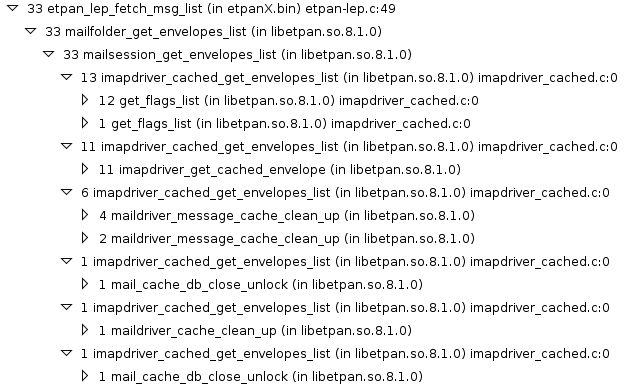

Sample
Sample will allow you to profile a process during runtime without recompiling it.
How it works
sample will retrieve the stack trace of all threads of a given process every 10 ms during a delay that was given by the user. This uses ptrace to get the stack trace information. These stack trace will be grouped by thread, then by callers to get a call tree. sample will count how many times a given call stack has been reported: this is the number on the left of the function name.
Limitations
- This currently works only on Linux x86 and x86_64.
- The process must be alive from the beginning to the end of the sample.
Usage
$ sample [pid] [delay-in-seconds] > sample-result.txtWhen finished, the data will be shown as a call tree . The number on the left will show how much time was spent in each function. By using the following command, the results will be shown in a GUI.
$ gtk-sample sample-result.txt
Here how you read it

- You can see that
etpan_lep_fetch_msg_list()call (33 units of time, unit of time is 10 ms) consists mainly in callingmailfolder_get_envelopes_list()(33 units of time). mailfolder_get_envelopes_list()call (33 units of time) consists mainly in callingmailsession_get_envelopes_list()(33 units of time).mailsession_get_envelopes_list()(33 units of time) splits time usage in 6 parts: 13 units of time is spent inimapdriver_cached_get_envelopes_list(),get_flags_list(). 11 units of time is spent inimapdriver_cached_get_envelopes_list(),imapdriver_get_cached_envelope(). 6 units of time is spent inimapdriver_cached_get_envelopes_list(),maildriver_message_cached_clean_up(). The other parts can be neglected.